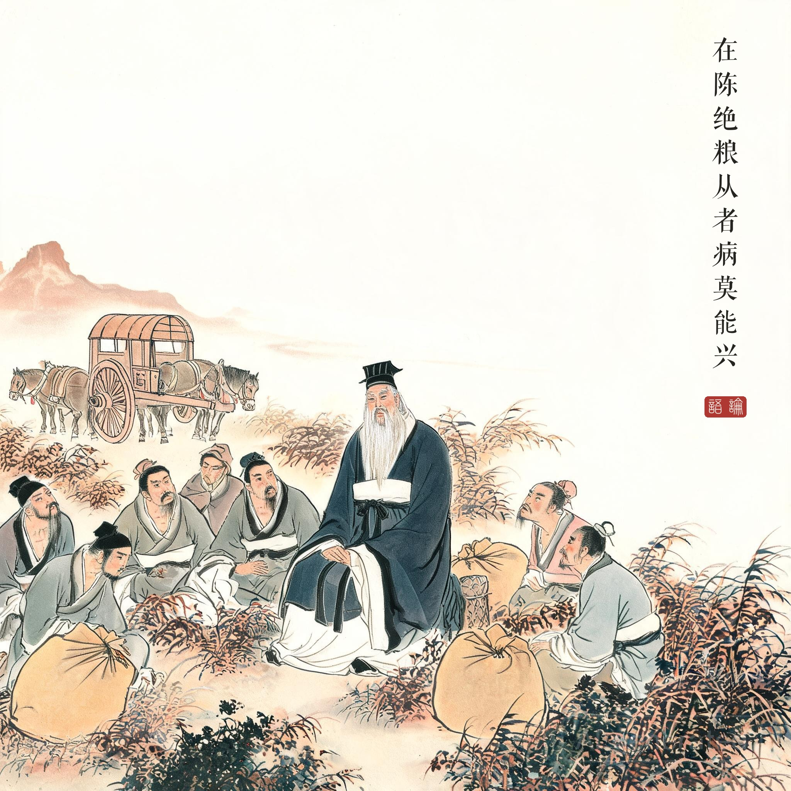
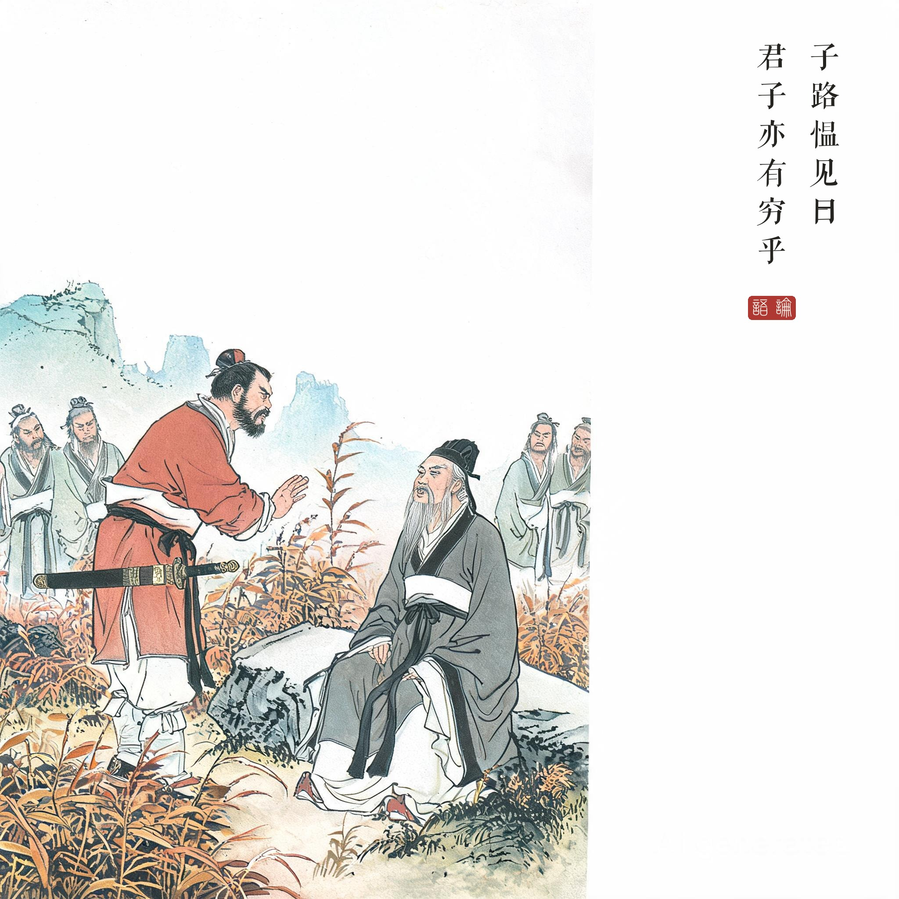
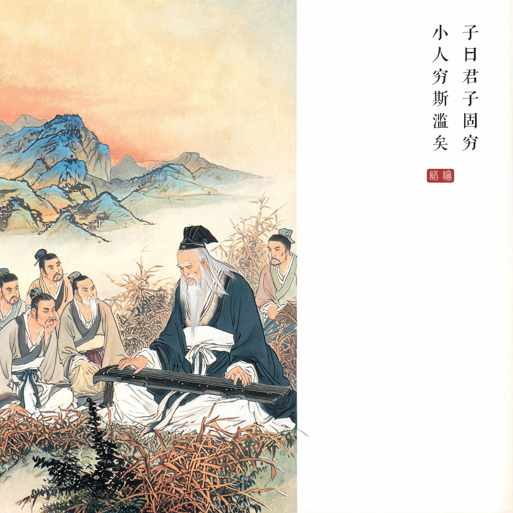

《论语 · 卫灵公第十五》。在陈绝粮事，《史记 · 孔子世家》系于孔子六十三岁前后，为周游列国最后的大厄。
（据 daizhigev20《论语》底本节录，题款诸句见组画清单）
孔子在陈国断了粮，随行弟子都饿病了，起不了身。子路带着愠怒来见："君子也有穷途末路吗？"孔子说："君子在穷困中依然固守；小人一旦穷困，就什么都干得出来了。"
《史记》记绝粮时孔子仍"讲诵弦歌不衰"——画中弟子闻言渐平，正是弦歌的力量。本章另一问更狠：子贡问"夫子之道至大，何为不容"，孔子笑答：不容然后见君子。
绝粮事件在孔子生平中的位置。周游列国十四年，畏于匡、伐树于宋、绝粮于陈——三大厄中绝粮最直接考验信仰：追随者开始怀疑"道"是否真的可行。孔子的回答不解释为什么会穷，只划出穷时的两条路：固守，或放滥。道德的意义恰恰在走投无路时才显形。
"弦歌不衰"的抵抗。《史记》载夫子"讲诵弦歌不衰"——外境夺不走的行为，是内心秩序的最后宣言。后世文天祥狱中作《正气歌》、王阳明龙场瘴地悟道，皆此一路数：把绝境当作检验，而非否定。
读画小识。三幕色调是十回中最沉的：旷野荒草用灰赭，人物面有饥色；第二幕子路按剑（提示词明确"不拔"——愠而不反，剑是情绪不是武器）；第三幕黄昏，夫子端坐抚琴，弟子围坐渐平——画面的秩序感本身就是"固穷"的视觉化。